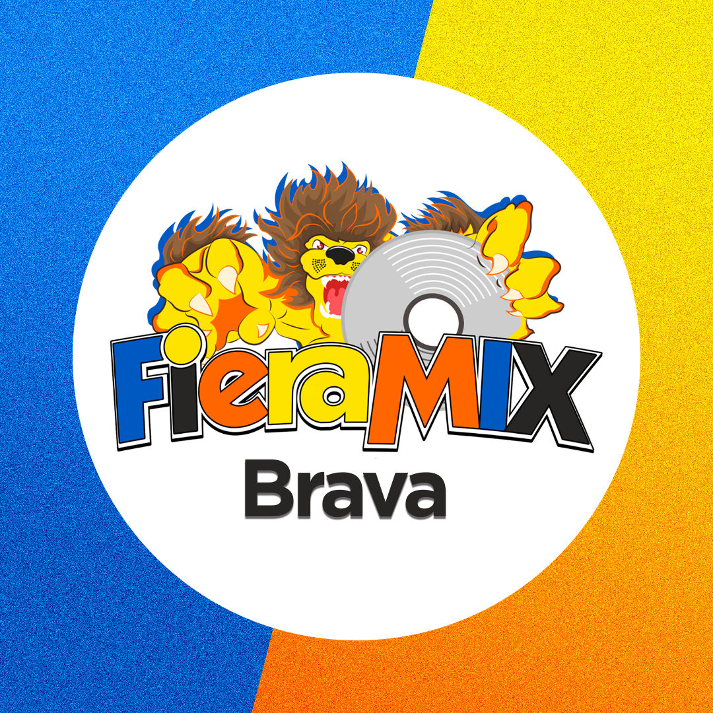

CANCIÓN ACTUAL
Transmisión en vivo
FIERAMIX
Buscando metadata de la emisora…
Disfruta merengue, bachata, salsa, baladas, urbano, rancheras, música internacional y cristiana desde un solo portal.

Selecciona la señal que deseas escuchar.
Consulta las nueve señales del grupo desde una sola pantalla.
Contenido continuo para acompañarte las 24 horas.
Música, energía e información para comenzar el día.
Los éxitos de cada género, sin interrupciones innecesarias.
Ritmo, entretenimiento y participación de los oyentes.
Programación especial según el formato de cada emisora.
Un espacio preparado para publicar las informaciones más importantes.
Noticias de interés público, comunidades, instituciones y servicios.
Novedades de artistas, lanzamientos, eventos y cultura popular.
Los hechos internacionales explicados de forma clara y directa.
Las canciones más sonadas en Grupo Fieramix.com.
Somos la red latina que mueve el mundo: un grupo de emisoras online especializadas, diseñadas para acompañar a nuestra audiencia las 24 horas desde cualquier lugar.
WhatsApp oficial: +1 (809) 841-9586
Únete a la comunidad de quienes viven la música las 24 horas. Recibe noticias, estrenos, programación especial, concursos y contenido exclusivo.
📲 Unirme al Club de Oyentes